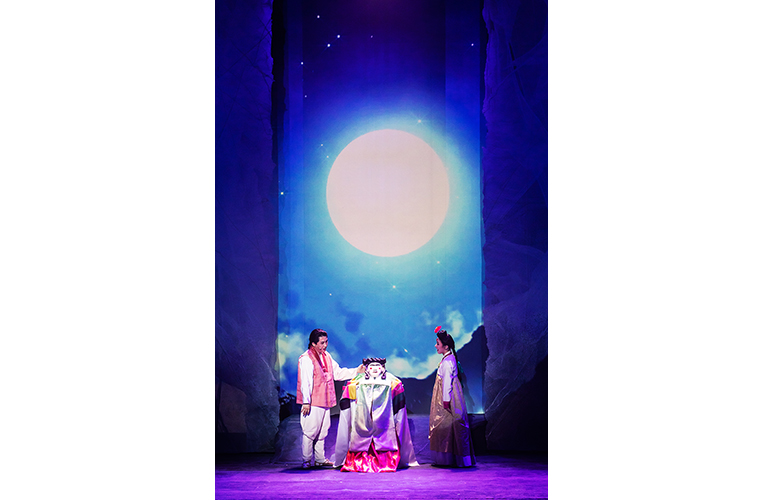

국립민속국악원 교류공연 <별난각시>
- 일시
- 11.24.(금) ~ 11.25.(토) 주중 19:30 주말 17:00
- 장소
- 연악당
- 관람료
- S석 10,000원 A석 8,000원
- 출연진/연출진
- 국립민속국악원 국악연주단 및 객원/ 서연호(대본) 홍원기(연출) 김영길(음악감독) 박애리(작창) 등
- 관람연령
- 취학아동이상
풍자와 해학이 가득한 하회별신굿, 창극으로 태어나다.
국립민속국악원 개원 30주년 기념 대표작품. 경북 안동 화회마을에서 전해 내려오는 허도령 이야기를 새롭게 풀어내어 ‘신(神)이 된 각시’ 이야기를 창극에 담아 전통 창극의 멋을 선사한다.
